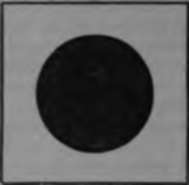
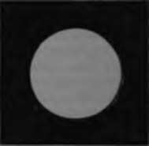

Accidental Images
Description
This section is from the book "Wonders Of The Human Body", by Auguste Le Pileur. Also available from Amazon: Wonders of the Human Body.
Accidental Images
We may compare to a certain extent the action of light on the retina to that of pressure on an elastic surface. When the rays of any colour strike the retina, it resists the impulse of the luminous wave, and strives to regain a state of repose. When the action of light abruptly ceases, as when we close the eyes, for example, after a very short time, which is measured by the duration of the impression produced, the retina returns to its normal state by a reaction which is more energetic in proportion to the length or duration of the action. It passes by a sort of oscillation from the condition in which it was placed by the luminous rays, that is to say, from the positive condition of impression to a negative one, and then forced by the reaction, it passes the point of repose, and recedes in an opposite direction. These oscillations continue for a variable time, growing feebler and feebler. The reaction of the retina, and the negative phases of impression, give rise to a new sensation independent of any external agent, by producing what are termed accidental or consecutive images.
We know that two colours are complementary to each other, which when mingled together produce white; but the accidental images have the peculiarity of presenting themselves in the colour complementary to that of the luminous rays which have excited the retina; thus, if we look steadily for a certain length of time in a very clear light at a wall painted red, the accidental image is green, and if the wall is orange, the image will be blue, etc.
If, on going into a dimly lighted gallery, we fix our eyes for a minute or two on a window which receives the diffused light, and then shut them suddenly and cover them so as to place them in complete darkness, the primitive impression of the window, with the panes lighted and the sashes dark, remains for a time, but very soon the consecutive image appears with the frame luminous and the glass obscure. This last image will appear sooner if a little light be admitted through the closed lids; but in all experiments of this kind, the eyeballs must be kept perfectly still under the veil with which they are covered, for the slightest change in the direction of the optic axes will cause the images, whether primitive or accidental, immediately to disappear.
One of the most important facts in this portion of the history of the eye, we owe to the observation of M. Plateau. It is that the duration of the uniform intensity of the retinal impression, up to the moment when it begins to decrease, is short in proportion to the intensity, that is in proportion as the light which produced it was brilliant and white; so the impression is less and less durable in its first intensity according as it is produced by looking at a blue, red, yellow, or white disk; if, on the contrary, we measure the impression not only in its period of uniform intensity, but from its maximum to its minimum, it is long in proportion to the brilliancy of the light, that is to say, as the disk is white, yellow, red, or blue.
Several physiologists explain the formation of accidental images by persistent excitation of the retina with diminution of sensibility. They think that the light proper of the retina plays a part in this phenomenon.
Fig. 41. Irradiation.
Continue to:
- prev: Persistence Of Retinal Impressions
- Table of Contents
- next: Irradiation, Accidental Fringes Of Light